珍寺的篠栗霊場巡り
75番紅葉ヶ滝薬師堂
珍寺的篠栗霊場巡り、お次は篠栗霊場の一番東のエリアにある紅葉ヶ滝薬師堂。
ここも山あいにあるお寺だ。
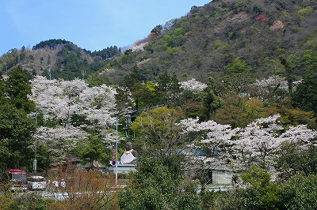
曲がりくねった山道を進むと桜の花でそこだけが白く浮き出ているような場所があった。
そこが紅葉ヶ滝薬師堂である。
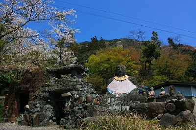
まず目に付くのはなんといってもこの大仏さん。
高さは裏の平屋の家より高かったので3〜4メートルといったところだろうか。
と、その前に見過ごす事の出来ない石像が！
チョンマゲや〜ん。
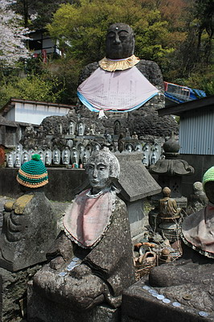 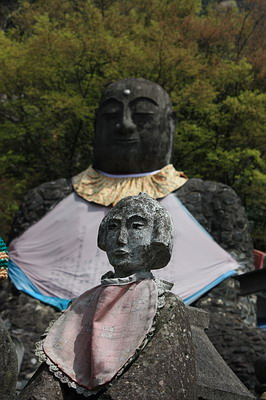
キチンと姿勢を正して座る町人風の石像は何を意味しているのだろう？
あまりにも面白すぎて台座や裏書きをチェックするのを忘れちゃいました。
何が面白いって、町人がヨダレ掛けして正座って…
さて、この大仏さんがいるエリアは札所である薬師堂とは少し離れた場所にあって、薬師堂の付帯施設というよりも独立したインディーズ霊場の雰囲気が濃厚に漂っていた。
恐らく篠栗八十八ヶ所の札所として紅葉ヶ滝薬師堂が設置された後に個人が作ったものなのだろう。
ゴツゴツした石をコンクリで固めた荒々しい門をはじめオリジナリティ溢れまくりのエレメントで充満している。
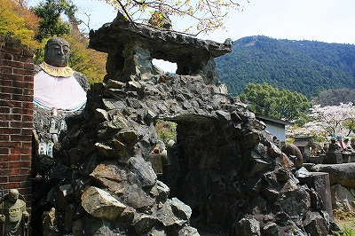
一見、西洋風なレンガ積みの鐘楼。
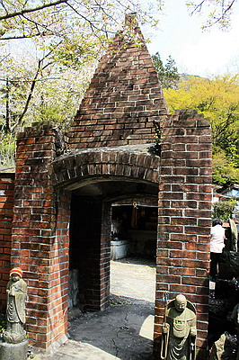
内部にはマリア像風の観音像、そして三角屋根の部分にはこれまた西洋風の鐘がぶら下がっていた。
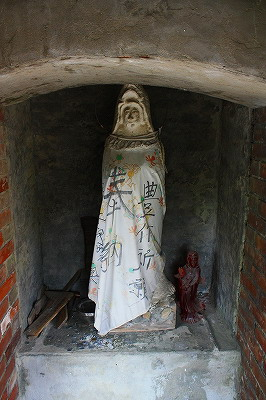 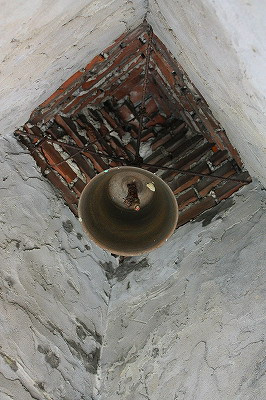
門を潜って大仏さんにご対面。
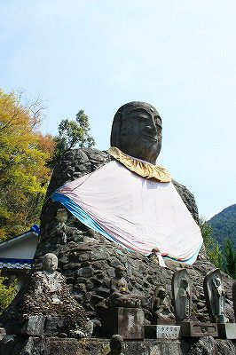
この大仏さんも先程の門同様、石をコンクリで固めた胴体に頭を乗せてある形状のものだ。
この石コンクリ塗り固め工法がかなりお気に入りの御様子。
まるで石垣のような大仏さんである。
さらに大仏さんのお膝元にはこんな石像も。
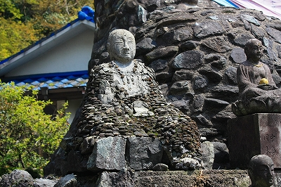
大仏さんと全く同じ手法で作られている。
この場所自体が新しい仏教デザインの開発がなされている実験場＆発表会場だったのではなかろうか、と私は想像する。
石を塗り固めたオリジナル工法の大仏や山門、そしてレンガ積みの鐘楼。はたまた町人風な石像を含めた特殊な石像、ひいては独自のスタイルを持つ信仰の宣言をしているのではなかろうか。
様々なオリジナル信仰デザインの渦巻く篠栗ならではの野心的表現に満ちた前衛霊場といえまいか。
さらに隣にはコンクリで塗り固められた重量感あふれるお堂がある。
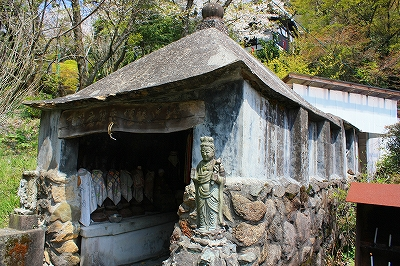
戦没者慰霊のための建物らしい。
そんな突拍子もない霊場だが、周囲の咲き誇る桜によってとんがった雰囲気は見事に中和されている。
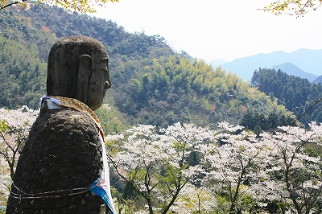
大仏さんもホラ、心なしかニッコリしてるでしょ。
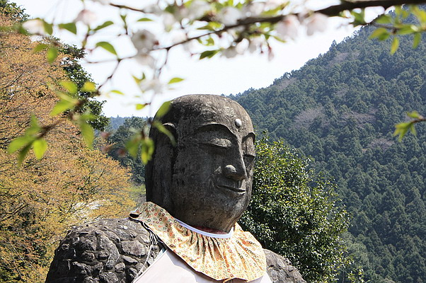
で、本体の紅葉ヶ滝薬師堂。
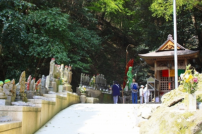
こちらはいかにも正調篠栗霊場らしく滝を基調にゴリゴリの不動信仰を全面に出した雰囲気だった。
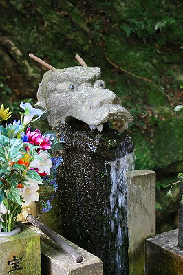
お堂の周辺にはグリーンジャイアントみたいな不動サマを中心に多くの石像が並んでいた。
山に囲まれた篠栗は霊場の町であると同時に滝の町でもある。
水が無尽蔵に流れてくる光景を昔の人が見て神仏の所業以外の何物でもないと考えるのもごく自然なことかもしれない。
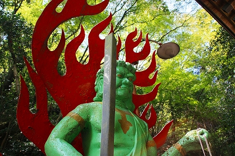 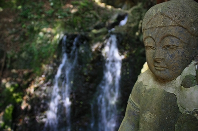
生きていくうえで必要な水が井戸を掘らずともジャンジャン流れてくるのだから何らかの信仰が生まれて当たり前なのだ。
地学や科学を一通り学んでいるはずの現代の人間だって何とかの井戸がパワーでどうのこうの、って言ってるじゃないすか。
薬師堂には先客がおり、皆一心に真言を唱えていた。
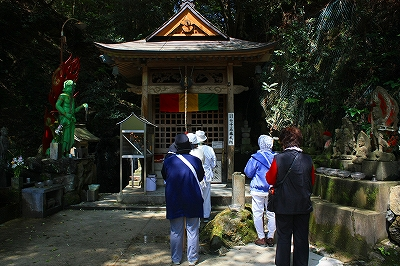 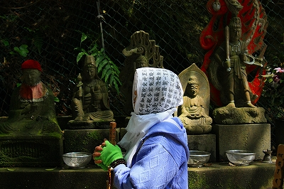
特に頭に般若心経を纏ったご婦人の姿は印象的であった。
決して窺い知る事はできないが、何を祈り何を願っているのだろう。
次の霊場へトライアル！
珍寺的篠栗霊場巡りTOPへ
珍寺大道場 HOME